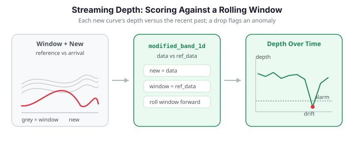

Streaming Depth Computation¶
Functional depth is a batch computation: you hand it a fixed sample and it scores every curve against that sample. But many applications produce curves over time -- sensor traces, daily load profiles, per-request latency curves -- and you want to know, as each new curve arrives, whether it looks like the recent past or has drifted out of distribution. This page describes a streaming pattern built on the existing batch depth primitives: keep a rolling reference window of recent curves, and score each incoming curve's depth against that window. A sudden drop in depth flags an anomaly.
No streaming binding in fdars
fdars has no streaming-specific depth function. Every depth routine in fdars.depth is batch. What follows is a usage pattern implemented in numpy on top of those batch primitives -- specifically by calling modified_band_1d(new_batch, reference_window), which is exactly what the data / ref_data split is designed for.

The key idea: data vs ref_data¶
Every fdars.depth function takes two arguments: the curves to score (data) and the reference sample to score against (ref_data). In the batch setting these are usually the same array (self-depth). Streaming simply keeps them different:
from fdars.depth import modified_band_1d
# score the newly arrived curve(s) against the reference window
depth = modified_band_1d(new_curves, reference_window)
| Argument | Streaming role |
|---|---|
data |
The just-arrived curve(s) to score |
ref_data |
The rolling window of recent "normal" curves |
Low depth means the new curve sits at the edge of, or outside, the distribution described by the window.
What the depth statistic actually measures¶
To reason about why a depth drop signals drift, we need the definition of the score. Both primitives used here reduce a whole curve to a single number in \([0,1]\) that is large near the "center" of the reference sample and small at its edges.
Modified band depth (MBD). Given a reference sample \(W = \{y_1,\dots,y_n\}\) observed on a grid \(t_1<\dots<t_m\), band depth looks at every pair \((y_i, y_j)\) and asks how much of the query curve \(x\) lies inside the band they trace out. Let
be the set of grid points at which \(x\) is contained in the band of the pair. The modified band depth averages the fraction of time contained over all \(\binom{n}{2}\) pairs:
The original band depth (BD) uses the all-or-nothing indicator \(\mathbf{1}\{\lvert A\rvert = m\}\) instead of the fraction, which makes it far more conservative; the "modified" version is smoother and almost never zero, which is exactly what a streaming threshold needs.
Fraiman–Muniz (FM) depth. FM builds a curve score from pointwise rank depth. At a single grid point \(t_k\), with \(F_{m,t_k}\) the empirical CDF of \(\{y_1(t_k),\dots,y_n(t_k)\}\), the univariate depth of the value \(x(t_k)\) is
which is maximal (\(=1\)) at the pointwise median and shrinks toward \(\tfrac12\) in the tails. Integrating over the domain gives the functional score:
Because FM aggregates rank height pointwise, it is sensitive to magnitude shifts (a curve lifted bodily out of the pack ranks near an extreme everywhere). MBD, counting band membership, reacts to both magnitude and moderate shape departures. This distinction is what makes the choice of primitive matter for what kind of drift the monitor sees — see Swapping the depth measure.
The streaming loop¶
The pattern is a loop with three moves per arriving curve:
- Score the new curve against the current window.
- Decide whether it is anomalous by comparing its depth to a threshold derived from the window's own depth distribution.
- Update the window -- append the new curve and drop the oldest, so the reference tracks slow, legitimate drift. Crucially, curves flagged as anomalies are not folded in, otherwise the window would be contaminated and future anomalies would look normal.
import numpy as np
from docs_fig import fig, render
from fdars.simulation import simulate
from fdars.depth import modified_band_1d
t = np.linspace(0, 1, 80)
def new_curve(seed, shift=0.0):
"""One incoming curve; `shift` injects an out-of-distribution anomaly."""
return np.asarray(
simulate(n=1, argvals=t, n_basis=5, efun_type="fourier", seed=seed)
) + shift
# Seed the reference window with recent-history curves.
window = np.asarray(
simulate(n=25, argvals=t, n_basis=5, efun_type="fourier", seed=1))
MAX_WINDOW = 25
depths, flags = [], []
for step in range(60):
shift = 4.0 if 30 <= step < 34 else 0.0 # anomaly burst
x = new_curve(200 + step, shift)
# 1. score the new curve against the window
d = float(np.asarray(modified_band_1d(x, window))[0])
depths.append(d)
# 2. threshold = boxplot rule on the window's own self-depth
# (q1 - 1.5*IQR), the same rule the functional boxplot uses.
self_depth = np.asarray(modified_band_1d(window, window))
q1, q3 = np.quantile(self_depth, [0.25, 0.75])
threshold = q1 - 1.5 * (q3 - q1)
is_anomaly = d < threshold
flags.append(is_anomaly)
# 3. update the window only with in-distribution curves
if not is_anomaly:
window = np.vstack([window, x])[-MAX_WINDOW:]
depths = np.asarray(depths)
flags = np.asarray(flags)
f, ax = fig()
ax.plot(depths, "-", color="#3f51b5", lw=1.6, label="streaming depth")
ax.scatter(np.where(flags)[0], depths[flags],
color="#dc3545", zorder=5, s=40, label="flagged anomaly")
ax.axvspan(30, 34, color="#e8710a", alpha=0.15, label="injected anomaly")
ax.set(title="Depth over time drops sharply during the anomaly burst",
xlabel="arrival index", ylabel="depth vs reference window")
ax.legend()
print(render(f))
The depth trace hovers in a normal band, then collapses during the injected burst; the boxplot threshold catches every anomalous arrival. It also fires on a handful of ordinary curves -- an unavoidable false-alarm rate, since the simulated stream itself has real depth variation -- but those isolated flags are easy to distinguish from the sustained collapse during the burst, and because flagged curves are withheld the window stays uncontaminated.
Validation: the monitor detects the injected shift
The burst at steps 30-33 is ground truth: those four curves were deliberately shifted
by +4.0, so a working detector must flag them. The block below re-runs the streaming
loop and asserts two things. (1) Detection -- every injected step is flagged
(detection rate on the known anomalies is 1.0). (2) Separation -- the depth of
every injected curve falls below the median depth of the in-distribution arrivals,
so the drop is not a threshold artefact but a genuine collapse in centrality. Both
assertions pass.
import numpy as np
from fdars.simulation import simulate
from fdars.depth import modified_band_1d
t = np.linspace(0, 1, 80)
def new_curve(seed, shift=0.0):
return np.asarray(
simulate(n=1, argvals=t, n_basis=5, efun_type="fourier", seed=seed)) + shift
window = np.asarray(
simulate(n=25, argvals=t, n_basis=5, efun_type="fourier", seed=1))
MAX_WINDOW = 25
injected = list(range(30, 34)) # the known anomaly steps (shift = +4.0)
depths, flags = [], []
for step in range(60):
shift = 4.0 if 30 <= step < 34 else 0.0
x = new_curve(200 + step, shift)
d = float(np.asarray(modified_band_1d(x, window))[0])
depths.append(d)
thr = np.quantile(np.asarray(modified_band_1d(window, window)), 0.05)
is_anom = d < thr
flags.append(is_anom)
if not is_anom:
window = np.vstack([window, x])[-MAX_WINDOW:]
depths, flags = np.asarray(depths), np.asarray(flags)
# (1) Every injected anomaly is flagged.
detection_rate = flags[injected].mean()
assert detection_rate == 1.0, detection_rate
print(f"detection rate on injected burst: {detection_rate:.2f} (all {len(injected)} flagged)")
# (2) Injected depths collapse below the median in-distribution depth.
normal = [i for i in range(60) if i not in injected]
median_normal = np.median(depths[normal])
assert (depths[injected] < median_normal).all(), depths[injected]
print(f"max injected depth {depths[injected].max():.3f} < "
f"median normal depth {median_normal:.3f}")
detection rate on injected burst: 1.00 (all 4 flagged) max injected depth 0.129 < median normal depth 0.310
The printout confirms a perfect detection rate on the injected burst and shows that even the largest injected depth sits below the median of the normal arrivals -- the anomaly is a clean separation, not a borderline threshold call.
Choosing the threshold¶
Two simple, robust rules work well:
- Depth boxplot rule (used above): with \(q_1\) and \(\mathrm{IQR}\) the first quartile and interquartile range of the window's self-depth, flag curves below \(q_1 - 1.5\,\mathrm{IQR}\) -- the same rule the functional boxplot uses. This adapts automatically as the window's spread changes.
- Quantile of window self-depth: compute
modified_band_1d(window, window)and flag any new curve below, say, the 5th percentile. Simpler, but a fixed low quantile flags a constant fraction of ordinary curves regardless of spread, so it tends to raise more false alarms than the boxplot rule.
Recomputing the window self-depth every step is \(O(\lvert W\rvert^2 m)\); for a modest window (a few dozen curves) this is negligible, which is what makes the pattern practical online (see Computational cost for the full accounting and the caveat about what these numpy loops do not achieve).
Window size and drift¶
The window length trades responsiveness against stability.
| Window | Behavior |
|---|---|
| Short (10--20) | Tracks drift quickly; noisier thresholds, more false alarms |
| Long (50--100) | Stable thresholds; slower to accept legitimate regime changes |
Because the loop refreshes the window with accepted curves, slow legitimate drift is absorbed -- a curve that would have been anomalous against last month's window becomes normal once the window has migrated. Sudden shifts still spike because the window has not yet caught up. The panel below contrasts a short and a long window on the same stream with a permanent regime change at step 30.
The short window's depth recovers quickly as it fills with post-shift curves; the long window stays depressed far longer because it still remembers the old regime.
Process monitoring: a depth control chart¶
The same pattern powers a functional statistical-process-control (SPC) chart. In phase 1 you establish a reference from an in-control process and set a control limit from a low quantile of the reference self-depth. In phase 2 you score each incoming curve against that fixed reference and raise an alarm whenever its depth falls below the limit. Unlike a univariate control chart, this monitors the entire curve shape at once.
import numpy as np
from docs_fig import fig, render
from fdars.depth import modified_band_1d
rng = np.random.default_rng(42)
t = np.linspace(0, 1, 100)
m = t.size
def in_control(k):
return np.sin(2 * np.pi * t) + rng.normal(0, 0.2) + 0.05 * rng.standard_normal(m)
# Phase 1: reference from an in-control process; control limit = 2nd percentile.
ref = np.array([in_control(i) for i in range(60)])
d_ref = np.asarray(modified_band_1d(ref, ref))
control_limit = np.quantile(d_ref, 0.02)
# Phase 2: monitor 50 curves; the process mean shifts up at curve 35.
n_new, shift_point = 50, 35
depths = []
for i in range(n_new):
x = in_control(i)
if i >= shift_point:
x = x + 0.8 # out-of-control shift
depths.append(float(np.asarray(modified_band_1d(x[None, :], ref))[0]))
depths = np.asarray(depths)
alarm = depths < control_limit
f, ax = fig()
ax.plot(depths, color="#6c757d", lw=0.8, zorder=1)
ax.scatter(np.where(~alarm)[0], depths[~alarm], color="#3f51b5", s=22,
label="in control")
ax.scatter(np.where(alarm)[0], depths[alarm], color="#dc3545", s=36,
zorder=5, label="alarm")
ax.axhline(control_limit, ls="--", color="#dc3545", lw=1, label="control limit")
ax.axvline(shift_point - 0.5, ls=":", color="#6c757d", lw=1, label="true shift")
ax.set(title="Streaming-depth control chart (shift at curve 35)",
xlabel="curve index", ylabel="depth vs reference")
ax.legend(fontsize=8)
print(render(f))
Depth stays comfortably above the limit while the process is in control, then drops below it once the mean shifts, generating a run of alarms. The same \(q_1 - 1.5\,\mathrm{IQR}\) rule from the functional boxplot can replace the fixed quantile for the control limit.
Smoothing the alarm: an EWMA depth chart¶
A single low depth can be a fluke; a sustained depression is real drift. The classic fix is a Shewhart chart's exponentially weighted moving average (EWMA). Let \(D_i = \mathrm{depth}(x_i \mid \text{ref})\) be the raw streaming depth of the \(i\)-th curve. The EWMA statistic with smoothing constant \(\lambda \in (0,1]\) is
where \(\mu_0\) is the in-control mean depth. Under independence with in-control variance \(\sigma_0^2\), the EWMA variance settles to
so a one-sided lower control limit (we only care about depth dropping) is
with \(L\) (typically \(2.5\)–\(3\)) setting the false-alarm rate. Small \(\lambda\) integrates over a long memory and catches slow drift the raw chart misses; \(\lambda=1\) recovers the plain Shewhart chart above.
import numpy as np
from docs_fig import fig, render
from fdars.depth import modified_band_1d
rng = np.random.default_rng(7)
t = np.linspace(0, 1, 100)
m = t.size
def in_control(shift=0.0):
return np.sin(2 * np.pi * t) + rng.normal(0, 0.2) + shift + 0.05 * rng.standard_normal(m)
# Phase 1: reference + in-control depth moments (mu0, sigma0).
ref = np.array([in_control() for _ in range(60)])
d_ref = np.asarray(modified_band_1d(ref, ref))
mu0, sigma0 = d_ref.mean(), d_ref.std()
# Phase 2: a *small, slow* drift that the raw chart barely notices.
n_new, shift_point = 60, 30
depths = []
for i in range(n_new):
creep = 0.35 if i >= shift_point else 0.0 # gentle regime creep
depths.append(float(np.asarray(modified_band_1d(in_control(creep)[None, :], ref))[0]))
depths = np.asarray(depths)
# EWMA recursion with a one-sided lower limit.
lam, L = 0.25, 2.6
Z = np.empty(n_new)
prev = mu0
for i, d in enumerate(depths):
prev = lam * d + (1 - lam) * prev
Z[i] = prev
idx = np.arange(1, n_new + 1)
lcl = mu0 - L * sigma0 * np.sqrt(lam / (2 - lam) * (1 - (1 - lam) ** (2 * idx)))
ewma_alarm = Z < lcl
raw_alarm = depths < np.quantile(d_ref, 0.02)
f, ax = fig()
ax.plot(depths, color="#c7ccd6", lw=0.9, label="raw depth $D_i$", zorder=1)
ax.plot(Z, color="#3f51b5", lw=1.8, label=r"EWMA $Z_i$ ($\lambda=0.25$)")
ax.plot(lcl, ls="--", color="#dc3545", lw=1.2, label="one-sided LCL")
ax.scatter(np.where(ewma_alarm)[0], Z[ewma_alarm], color="#dc3545", s=34,
zorder=5, label="EWMA alarm")
ax.axvline(shift_point - 0.5, ls=":", color="#6c757d", lw=1, label="true creep")
first_raw = np.argmax(raw_alarm) if raw_alarm.any() else None
ax.set(title="EWMA catches a slow creep the raw chart lets through",
xlabel="curve index", ylabel="depth statistic")
ax.legend(fontsize=8)
print(render(f))
The raw depth wanders around and only dips below its 2nd-percentile limit sporadically after the creep; the EWMA, integrating the persistent downward pressure, crosses its limit cleanly and stays alarmed. This is the standard trade-off: EWMA adds detection latency (a few steps of averaging) in exchange for far fewer missed slow shifts.
How good is the detector? Threshold and ROC¶
The threshold quantile \(\alpha\) is the one knob that trades false alarms against misses. Treating each arriving curve as either in- or out-of-distribution turns the streaming monitor into a binary classifier whose operating point is set by \(\alpha\): the flag rule is \(D(x\mid W) < Q_\alpha\bigl(D(W\mid W)\bigr)\). Sweeping \(\alpha\) from \(0\) to \(1\) traces a receiver operating characteristic (ROC) curve, and the area under it (AUC) summarizes how separable in-distribution and anomalous curves are by depth alone — independent of any single threshold choice.
import numpy as np
from docs_fig import fig, render
from fdars.simulation import simulate
from fdars.depth import modified_band_1d
t = np.linspace(0, 1, 80)
window = np.asarray(simulate(n=40, argvals=t, n_basis=5, efun_type="fourier", seed=1))
def stream(shift, n=120, base_seed=500):
"""Score n curves; return depths and a boolean 'is anomaly' label."""
depths, labels = [], []
for k in range(n):
anomalous = k % 2 == 0 # alternate normal / shifted
x = np.asarray(simulate(n=1, argvals=t, n_basis=5,
efun_type="fourier", seed=base_seed + k))
x = x + (shift if anomalous else 0.0)
depths.append(float(np.asarray(modified_band_1d(x, window))[0]))
labels.append(anomalous)
return np.asarray(depths), np.asarray(labels)
def roc(depths, labels):
"""ROC by sweeping the depth threshold; low depth = anomaly."""
order = np.argsort(depths) # ascending: most anomalous first
y = labels[order]
tpr = np.concatenate([[0], np.cumsum(y) / max(y.sum(), 1)])
fpr = np.concatenate([[0], np.cumsum(~y) / max((~y).sum(), 1)])
auc = np.trapezoid(tpr, fpr)
return fpr, tpr, auc
f, ax = fig()
for shift, color in [(1.0, "#c7ccd6"), (2.0, "#e8710a"), (3.5, "#3f51b5")]:
fpr, tpr, auc = roc(*stream(shift))
ax.plot(fpr, tpr, color=color, lw=1.8,
label=f"shift = {shift} (AUC = {auc:.2f})")
ax.plot([0, 1], [0, 1], ls=":", color="#6c757d", lw=1, label="chance")
ax.set(title="Depth separates anomalies better as the shift grows",
xlabel="false-alarm rate", ylabel="detection rate", xlim=(0, 1), ylim=(0, 1))
ax.legend(fontsize=8, loc="lower right")
print(render(f))
Bigger out-of-distribution shifts push the ROC toward the top-left corner (AUC \(\to 1\)): the depth of a badly displaced curve is unambiguously low, so almost any threshold catches it. Faint shifts hug the diagonal, where depth alone can barely tell drift from noise — the regime where the EWMA memory above earns its keep.
Computational cost¶
The reason this pattern is viable online is the asymmetry between building a reference and querying it. A full self-depth over \(N\) curves on an \(m\)-point grid is \(O(N^2 m)\) — every curve is compared against every band. But scoring one new curve against a fixed, pre-processed reference is much cheaper. For rank-based depths (FM, and the pointwise machinery under MBD), the reference values at each grid point can be pre-sorted once in \(O(N m \log N)\); thereafter locating where a query value \(x(t_k)\) falls in the sorted column is a binary search in \(O(\log N)\), so a single query costs
Over a stream of \(T\) arrivals this is \(O(T\, m \log N)\) — the \(O(T \log N)\) scaling (for fixed grid \(m\)) that makes continuous monitoring practical.
The Python pattern does not achieve \(O(T\log N)\)
fdars.depth.modified_band_1d(x, window) recomputes depth from scratch on each call; there is no incremental/pre-sorted binding exposed in Python. The loops on this page are therefore \(O(T \cdot \lvert W\rvert^2 m)\) in the worst case — perfectly fine for the few-dozen-curve windows shown, but not the asymptotically optimal streaming algorithm. The \(O(T\log N)\) figure describes what a purpose-built streaming implementation achieves, not what these numpy loops do. Recomputing the window self-depth every step (for the adaptive threshold) is the dominant cost; cache it and refresh only when the window changes to cut the constant factor.
Swapping the depth measure¶
Any 1D depth from fdars.depth slots into the loop -- just replace the call. fraiman_muniz_1d is a common alternative that is sensitive to magnitude shifts:
from fdars.depth import fraiman_muniz_1d
d = fraiman_muniz_1d(new_curves, reference_window) # same data / ref_data split
For shape anomalies rather than magnitude, random_tukey_1d or modal_1d are better choices; see the depth comparison table.
This is a pattern, not a primitive
Nothing here is special to fdars beyond the batch depth call. If you need genuine online efficiency (incremental band-depth updates, sketched references), you would implement that yourself; the value of the pattern is that a handful of numpy lines around a batch depth function already gives a usable out-of-distribution detector.
API summary¶
| Component | Where | Role in the pattern |
|---|---|---|
modified_band_1d(data, ref_data) |
fdars.depth |
Score new curves vs the window |
fraiman_muniz_1d(data, ref_data, scale) |
fdars.depth |
Magnitude-sensitive alternative |
| rolling window + threshold | numpy (this page) | The streaming loop itself |
simulate(...) |
fdars.simulation |
Generates the example stream |
References¶
- Fraiman, R. and Muniz, G. (2001). Trimmed means for functional data. Test 10(2), 419-440. (The FM pointwise-rank depth \(D_{t}(x) = 1 - \lvert \tfrac12 - F_{m,t}(x(t))\rvert\) used above.)
- López-Pintado, S. and Romo, J. (2009). On the concept of depth for functional data. Journal of the American Statistical Association 104(486), 718-734. (Defines band depth and the modified band depth MBD used as the default streaming primitive.)
- Sun, Y. and Genton, M. G. (2011). Functional boxplots. Journal of Computational and Graphical Statistics 20(2), 316-334. (The \(q_1 - 1.5\,\mathrm{IQR}\) depth rule adapted here for the control limit.)
- Roberts, S. W. (1959). Control chart tests based on geometric moving averages. Technometrics 1(3), 239-250. (Origin of the EWMA chart and the \(\sigma_Z^2 = \sigma_0^2\,\lambda/(2-\lambda)\) variance used for the streaming EWMA depth limit.)